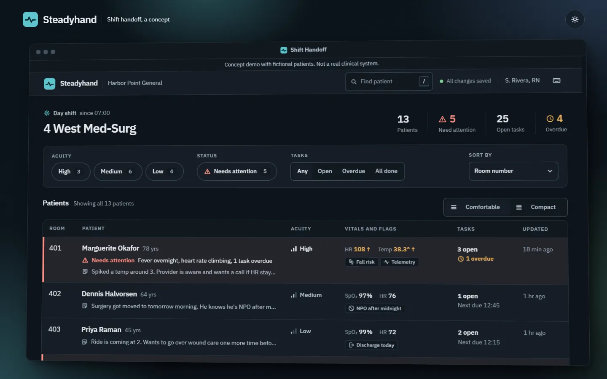
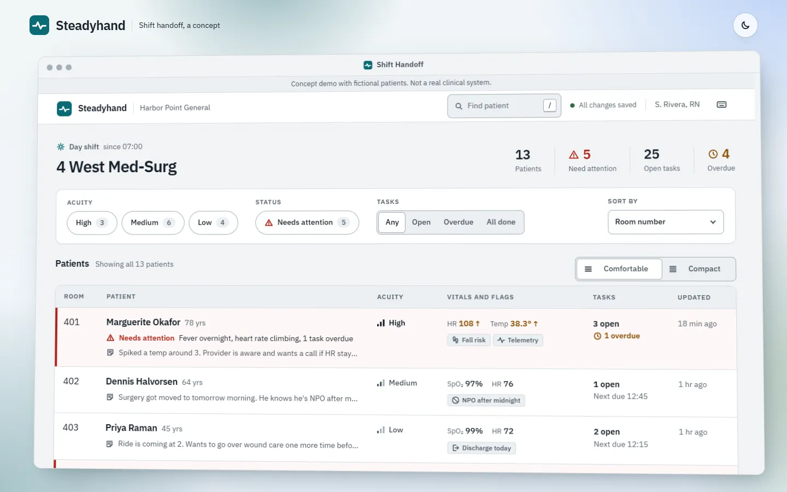
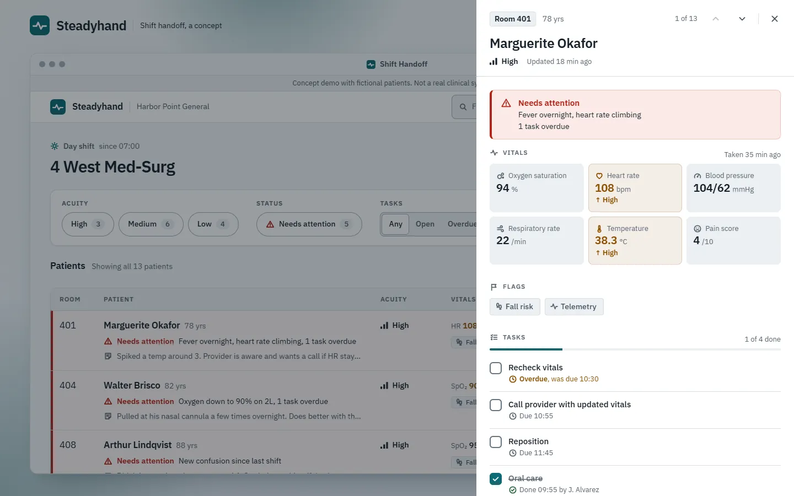
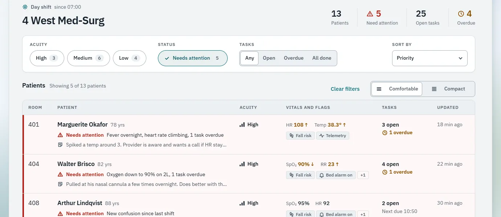
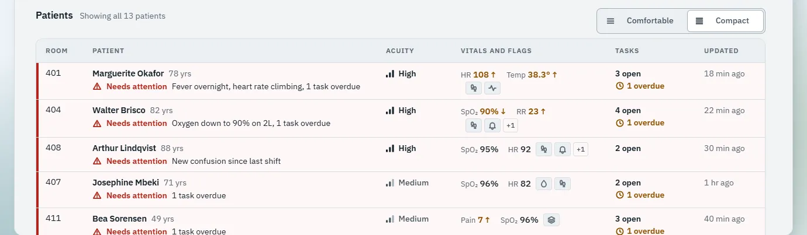
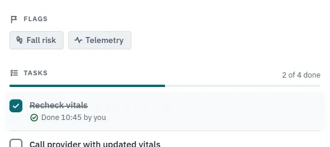
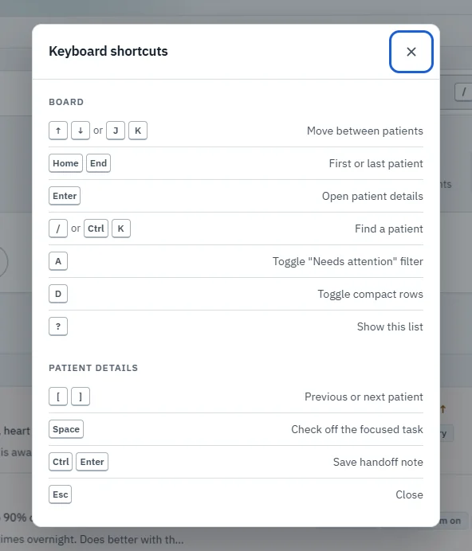
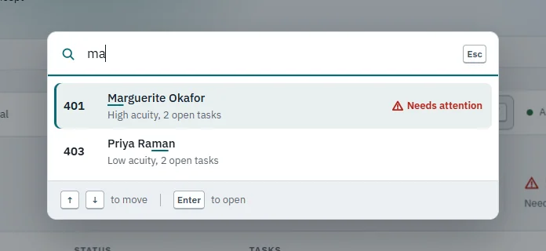
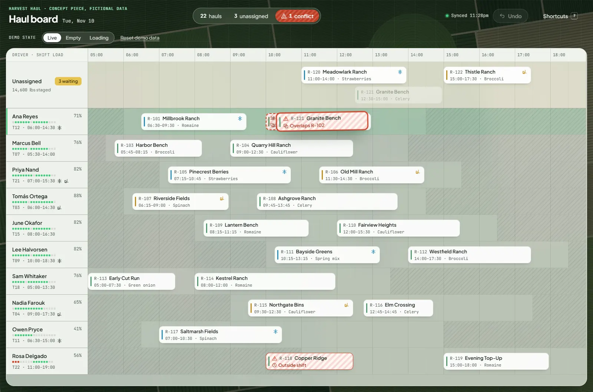

Steadyhand UX/UI concept
A shift handoff board that stays calm under pressure
Overview
Steadyhand is a shift handoff board for a made-up hospital unit. I built it to work through one UI problem: how do you keep a dense list calm and readable for someone who’s busy, tired and under time pressure? It’s a self-directed concept. There was no client and no user research, and all 13 patients are invented.

The problem
Picture a nurse picking up a unit at shift change. They need to know who’s on the floor, who’s getting worse, what’s overdue and what the last shift wanted them to know. They need all of it in the first ten minutes, probably while someone is asking them something else.
Show all of that for 13 patients and you end up with a wall of equally loud cells. So the problem I gave myself was narrow: make a dense list that stays calm, where the thing you need jumps out and everything else waits its turn.
I’m not a nurse and I didn’t talk to any. The workflow follows the general shape of handoff tools, and anything that sounds clinical is simplified on purpose. None of it is clinical guidance.
How do you keep a dense list calm and readable for someone who’s busy, tired and under time pressure?
Starting from questions, not layouts
My first pass wasn’t a layout. It was a list of what someone walking onto the unit asks, in rough order:
- Is anyone in trouble right now?
- Who’s the sickest overall?
- What do I owe whom, and is any of it late?
- What did the last shift want me to know?
- When did someone last lay eyes on this person?
Each question became a column or a signal, and the order of the questions set the visual priority. If a piece of information didn’t help you decide where to walk next, it went in the detail drawer instead of on the board.

The decisions that keep it calm
Most of the work was deciding what gets to be loud.
“Needs attention” and acuity are different things
A high acuity patient can be completely stable, and a low acuity patient can have an overdue blood sugar check. Mixing the two up is how boards end up all red. Attention is about right now, so it gets the alert color. Acuity is a standing fact, so it stays neutral. Attention is also computed rather than only typed in: a recorded concern or any overdue task sets it, so finishing the overdue task can clear the flag.
Red means one thing
Alert red is only ever used for “needs attention.” Overdue tasks and out-of-range vitals use amber, and acuity uses ink weight and a small bar glyph. Every flagged row reads as an icon, then words, then color, so someone with red-green color blindness, or a washed-out monitor at 3 AM, still gets the full message.

Deciding what compact mode gives up
Comfortable rows are the default because they’re calmer, but someone who already knows their patients would trade that calm for seeing the whole unit at once. The note preview goes first, because it’s the least time-critical line. Flags become icons, which only works because each flag already had its own shape. “Needs attention” never compresses, and rows never drop below 44 px.

The one moment of delight
Checking off a task is where I spent the most time. Pressing dips the box. On release, in about 200 ms, it fills, the check draws itself in, a soft ring breathes out once, and a line strikes through the label. If that was the overdue task, the attention banner disappears at the same moment, so you see the problem go away.
What I left out matters just as much: no bounce, no confetti, no sound. The context is serious, so the feedback is quick and then gets out of the way.

Accessibility was the starting bar
I set these before designing anything, not as a stretch goal at the end:
- The patient list is one Tab stop, with arrow keys or J and K inside it, so keyboard users don’t Tab through 13 rows.
- The drawer and dialogs are native modal dialogs. Escape closes them and focus returns to where you were. If that row has been filtered out, focus lands on the list heading instead.
- Every target is at least 44 px, including compact rows.
- Every text and status color pairing passes WCAG AA in both themes.
- With reduced motion turned on, animations become instant changes.


What the checks caught
These are measurements from my own local runs, not claims about real-world performance.
Lighthouse scored 96 for performance on mobile and 100 on desktop, and 100 for accessibility on both. The weak spot is mobile blocking time, at 140 to 170 ms. A scripted audit of about 2,800 text samples, across 13 states in both themes, found none below AA, with the lowest at 5.0:1.
- Lighthouse performance, mobile
- 96
- Lighthouse performance, desktop
- 100
- Lighthouse accessibility, mobile and desktop
- 100
- Lowest text contrast in ~2,800 samples
- 5.0:1
A font that held up the first paint
The page was waiting on a third-party font server before it could show anything.
What changed: I self-hosted the font, which took mobile first paint from 2.7 s to 1.4 s.
A layout shift I’d never seen
The empty roster let the footer paint on screen for a moment before the loading skeleton pushed it away.
What changed: I reserved the space up front, which took layout shift to 0.
A focus trap that leaked
A scripted Tab walk showed that the drawer’s focus trap was counting SVG icons as focusable, so Tab could escape it.
What changed: I fixed the trap, and the walk now checks that every focus stop is visible.
Mobile first paint
What I’d test with real people
I didn’t test any of this with people, and these are the questions I’d want answered first:
- Can people find the patient who needs them in under five seconds?
- Does rolling overdue tasks into “needs attention” help, or does it cause alarm fatigue on a busy day?
- Does showing the two most abnormal vitals per row help, or do people prefer fixed columns they can scan down?
- Does the check-off moment hold up on the fortieth task of a shift?
